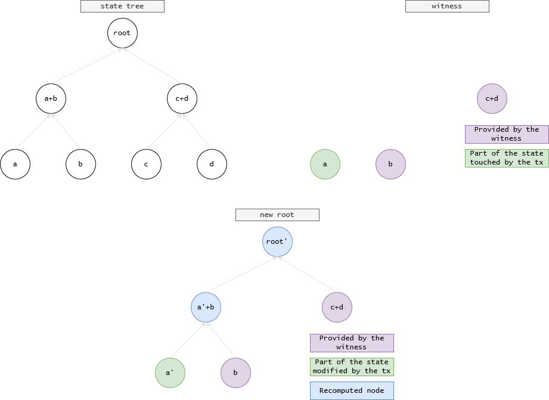

Maximising light clients security

Table of Contents
This post is a summary of the Fraud and Data Availability Proofs: Maximising Light Client Security and Scaling Blockchains with Dishonest Majorities paper, which is a good introduction to fraud proofs and data availability sampling.
I already discussed what a node is and the difference between light and full nodes in Decentralization & scalability, so check it out!
Since light clients only check block headers, they assume that the longest chain contains only valid transactions. In the case of a 51% attack, where full clients would still reject invalid transactions a light client would not.
We can eliminate the honest majority assumption for light clients using fraud proofs generated by full clients. In this way we bring the assumption down to just one honest full client. We also suppose in our network model that the victim light client is connected to at least one honest full client.
There are two important components that needs to be discussed:
- fraud proofs: to prove that a block contains invalid transactions.
- data availability sampling: for data availability assurance, needed to generate fraud proofs.
Goal: Assuming that it takes O(N) time for a full node to validate a block, light clients should discard an invalid block in less than O(N) time and space, where N is the number of transactions in a block. Note that this is necessary because light clients aren’t fast enough to keep up with the blockchain (otherwise they’d be full nodes). This requires updating the network at the protocol level.
Fraud proofs⌗
We define a transition as a function transition(S,t), where S is the state and t a transaction, which outputs the new state S' after executing t or gives an error.
The state tree is represented as a Patricia tree, but for simplicity assume it’s a sparse Merkle tree.
Since this transition needs the whole state tree, it can’t be used by light clients.
We define a new kind of transition function as rootTransition(stateRoot,t,w) which outputs a new state root stateRoot' or gives an error, where w is a sparse Merkle tree proof (a witness) of the parts of the state that the transaction t touches.
Note that these Merkle proofs are a subtree of the same state tree with a common root, so we can update the state root without having the whole state tree!
Given a list of transactions from a block, we can compute the intermediate state roots, where the last one is the state root of the new block.
We also add a new field inside the block header, the dataRoot, which represents transactions arranged into fixed-size chunks of data called “shares”, needed for data availability proofs. These shares contains intermediate state roots called “traces” as well as transactions.
A fraud proof consists of the relevant shares in the block that contain a bad state transition, Merkle proofs for those shares and the state witness for the transactions contained in those shares.
We assume a “period criterion”, a protocol rule that defines how often an intermediate state root should be included in the block’s data. For example, the rule could be at least once every p transactions, or b bytes or g gas.
The function to verify a fraud proof takes as input the fraud proofs and checks if applying the transactions in a period of the block’s data on the intermediate pre-state root results in the intermediate post-state root specified in the block of data. If it does not, then the fraud proof is valid and the block that the fraud proof is for should be permanently rejected by the client.
Data availability sampling⌗
Using fraud proofs alone, a malicious block producer could prevent full nodes from generating fraud proofs by withholding the data needed to recompute dataRoot, and only releasing the block header to the network.
The block producer could then only release the data which contains invalid transactions or state transitions long after the block as been published, causing the rollback of many transactions.
It is therefore necessary for light clients to have a level of assurance that the data matching dataRoot is indeed available in the network. It is important that all the data is available since it’s sufficient to just withhold a few bytes to hide an invalid transaction in a block.
Light clients could ask for all the data represented by dataRoot, but our goal is to get this assurance in less than O(N) time and space. This is where Reed-Solomon codes come into play.
Reed-Solomon encoding⌗
Reed-Solomon codes work under the assumption of bit erasures rather than bit errors.
A Reed-Solomon code encodes data by treating a length-$k$ message as a list of elements $y_0$, $y_1$, …, $y_{k-1}$, interpolating the polynomial $P(x)$ where $P(i) = y_i$ for all $0 ≤ i < k$, and then extending the list with $y_k$, $y_{k+1}$, …, $y_{n−1}$ where $y_i = P(i)$.
Let’s give an example.
Imagine we want to encode the message gm using a Reed-Solomon code with $k=2$.
We can encode the characters of the message using the ASCII table, so we get $y_0=103$ and $y_1=109$.
For simplicity let’s use the equation to interpolate a line from two points: $$\frac{y-y_0}{y_1-y_0}=\frac{x-x_0}{x_1-x_0}$$
The interpolation can be generalized for any polynomial using Lagrange interpolation or with more advanced techniques like Fast Fourier transforms.
Using the formula, our line equation is: $$\frac{y-103}{109-103}=\frac{x-0}{1-0}$$
Solving for $y$ we get $y=P(x)=6x+103$.
We can now extend the list by adding two new points: $P(2)=115$ and $P(3)=121$.
Using our ASCII table again, our extended message becomes gmsy.
If we get the message sy because the first 50% of the message got lost or has been withheld, we can recover the original message by reconstructing $P(x)$ using $P(2)=115$ and $P(3)=121$, since you just need two points to interpolate a line: $$\frac{y-115}{121-115}=\frac{x-2}{3-2}$$
which is again $y=P(x)=6x+103$.
By calculating $P(0)$ and $P(1)$ we get gm.
Reed-Solomon codes can detect and correct any combination of up to $\frac{n−k}{2}$ errors, or combinations of errors and erasures.
RS codes have been generalised to multidimensional codes.
1-Dimensional Reed-Solomon Data Availability Sampling Scheme⌗
A block producer computes a block of data consisting of $k$ shares, extends the data to $2k$ shares using Reed-Solomon encoding and computes a Merkle root (the dataRoot) over the extended data.
When a light client receive a block header with this dataRoot, they randomly sample shares from the Merkle tree that dataRoot represents, and only accept a block once it has received all of the share requested. Note that if an adversarial block producer makes more than 50% of shares unavailable, then the chance of picking always available shares halves at each draw.
Also note that for this challenge to work we need enough light clients to sample enough shares so that a block producer will be required to release more than 50% of the shares in order to pass the sampling challenge.
The problem with this scheme is that an adversarial block producer may incorrectly construct the extended data, so the incomplete block is unrecoverable even if more than 50% is available.
With standard Reed-Solomon encoding the fraud proof that the extended data is invalid is the original data itself, as clients would have to re-encode all data locally to verify the mismatch with the given extended data.
To solve this problem we use a multidimensional Reed-Solomon encoding, so that proofs are limited to a specific axis, reducing the proof size to $O(\sqrt[d]{n})$ where $d$ is the number of dimensions. For semplicity we’ll only consider two dimensional Reed-Solomon encoding.
2-Dimensional Reed-Solomon Encoded Merkle Tree Construction⌗
A 2D Reed-Solomon Encoded Merkle tree can be constructed as follows:
- Split the raw data into shares and arrange them into a $k × k$ matrix. Apply padding if necessary.
- Apply Reed-Solomon encoding on each row and column of the matrix. Then apply it a third time horizontally on the vertically extended portion of the matrix to complete the $2k × 2k$ matrix.
- Compute the root of the Merkle tree for each row and column, so we have $2k$
rowRootsand $2k$colRoots. - Compute the root of the Merkle tree of
rowRootsandcolRootsto get thedataRoot.
In total the tree of dataRoot contains $2 \times (2k)^2$ elements: $2k$ rows and $2k$ columns, each of which contains $2k$ elements.
A light client or full node can reconstruct dataRoot from all the row and column roots by recomputing step 4.
As we shall see later, we need light clients to also download all the row and column roots.
Random Sampling and Network Block Recovery⌗
In order for any share in the 2D Reed-Solomon matrix to be unrecoverable, then at least $(k+1)^2$ out of $(2k)^2$ shares must be unavailable (check Theorem 1 of the original paper for the proof). Thus when light clients receive a new block header from the network the should randomly sample $s < (k+1)^2$ distinct shares and only accept the block if they have received all of them. We suppose that a network model where a sufficient number of honest light clients make requests such that more than $(k+1)^2$ shares will be sampled. Additionally light clients gossip shares that they have received to the network, so that the full block can be recovered by honest full nodes.
The protocol between a light client and the full nodes that it is connected to works as follows:
- The light client receives a new block header from one of the (remember, potentially malicious) full nodes that it is connected to, and a set of
rowRootsandcolRoots. Check if the root of these roots is the same as thedataRoot. If not, the light client should discard the block header. - The light client randomly chooses a set of unique $(x, y)$ coordinates corresponding to points on the extended matrix, and sends them to one or more full nodes it is connected to.
- If a full node has all of the shares corresponding to the coordinates requested, then for each coordinate it responds with the share and the Merkle proof of inclusion in one of
rowRootorcolRoot. - For each share and proof the light client verifies the Merkle proof.
- Each share and valid Merkle proof received is gossiped to all the full nodes that the light client is connected to, and those full nodes gossip it to all the full nodes that they are connected to.
- If all the proofs in step 4 succeeded, and no shares are missing from the sample made in step 2, then the block is accepted as available if no fraud proof of incorrectly generated extended data (see next section) has been received within a certain network propagation time window.
Fraud Proofs of Incorrectly Generated Extended Data⌗
If a full node has enough shares to recover a particular row or column, and after doing so detects that recovered data does not match its respective row or column root, then it must distribute a fraud proof consisting of enough shares in that row or column to be able to recover it, and a Merkle proof for each share.
The function to verify the fraud proof takes as input the fraud proof, and checks first that all the shares given by the prover are in the same row or column, and then that the recovered row or column does not match the row or column root in the block. If both conditions are true then the fraud proof is valid and the block should be permanently rejected.
Further Research⌗
To remove the need for fraud proofs of incorrectly generated extended data, zk-SNARKs or zk-STARKs can be used to prove that the block headers are correctly erasure coded. You could even prove that the state transition has been applied correctly using zk proofs, but it’s way more complicated.
Ethereum is now exploring solving the correct erasure coding problem using KZG commitments, which we will explore in another article.